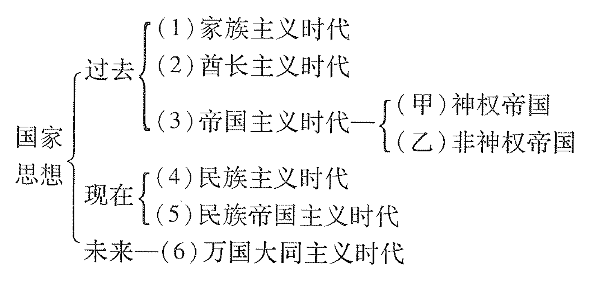
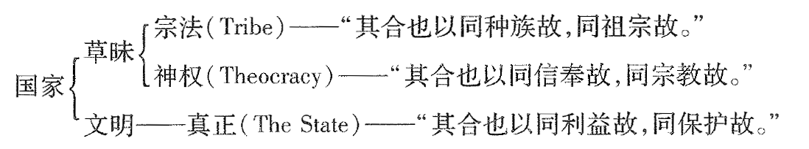
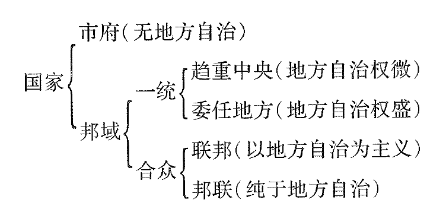
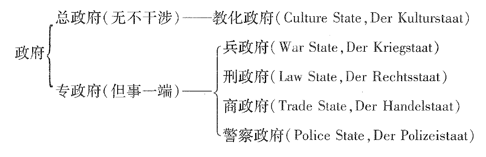

萧公权：《中国政治思想史》，“第四编：近代国家之政治思想——转变时期（下）”；“第五编：近代国家之政治思想——成熟时期”，北京：商务印书馆，2018。
第二十一章：戊戌维新
第一节：戊戌维新之历史背景
自明季以迄晚清，欧洲教士与商人不断东来，当时君臣既无外交经验，又乏国际知识，蒙昧无闻，妄自尊大。向也自尊，终以受辱。积痛苦之经验，几近百年。然后知旧章之不足用，思变法以图存。戊戌维新者，清季变法运动最惊人之一幕也。
清代风气闭塞，几达不可思议之程度。愚昧之自尊态度，不仅朝廷有之，学者亦不能免。必俟外患频来，痛惩深创，天朝之述梦，始憬然以觉。
同治及光绪初年之新政，观其条目，固不失为富强之要图，然行之三十年而未能免甲午之败，定富强之基，主要原因有二：
- 顽固党之阻挠太甚。
- 维新者之认识不足。
戊戊维新起于甲午战败之后，实由同、光变法运动孕育发展而成。同、光变法仅知西器可用，西技当师。至戊戌则兼欲师用西洋之政教，士大夫之世界知识既较丰于同治诸公，其政治思想亦更合乎近代之标准。所可叹者朝廷之愚昧依然，旧党之顽固如昔。
戊戊维新领袖以康有为、梁启超二人为最重要。
第二节：康有为之政治哲学
康有为（1858-1927），原名祖诒，字广厦，号长素，广东南海人。
康氏为戊戌维新之中坚人物。其政论虽针对一时一地之实际，而亦有理论上之基础。欲明康氏维新改制诸说之根本意义，非先一述其孔学渊源之社会理想不可。
康氏认孔子为中国万世不祧之教主与素王，孔子虽自谓述而不作，然究其实际，孔子立言皆托古以改制。泛言之，六经皆教主所作以寄其改制立教之主张。专言之，《春秋》乃素王所修以著其天下万世之宪法，而《礼运》大同、《春秋》三世尤孔子教法之中心也。
三世者：
- 据乱。
- 升平。
- 太平。
三世之说，传自何休；大同之义，见于《礼运》。有为合二传之旨，以太平世当大同，以升平世当小康，附以西洋新说，推演引申，其进化之社会理想，遂大体成立。
康氏论孔子为三世“立宪”，不仅为空前之教育家，实亦为古今中外最伟大之政治家。孔宪所以博大悠久如此者，以其适应三世而包蕴大同小康之二义也。
康氏承公羊家之说，谓《春秋》有“大义”与“微言”二法：
- 大义者，孔子所著据乱世之宪法而施行于三代以后之君主专制天下者也。
- 微言者，孔子所说升平、太平世之理想宪法也。
孔门微言不仅见于《春秋》公羊家之师说。古籍之中如《礼运》《孟子》皆明升平、太平宪法之旨，而《礼运》大同、小康之说尤为具体。小康之法天下为私，优于乱世而视大同则远逊。
康氏之政治哲学，共含五要义：
- 孔子为天下万世制宪法，故立国拨乱致治之道，无待于外求，而西洋古今国家之政治，实际上与孔学相契合。
- 政治社会为一由乱至治之进化程序，时已至则法随以变，时未至则不能躐等。
- 社会进化之次第为由据乱世以达小康升平世，由小康升平世以跻于大同太平世。
- 中国自秦汉至明清为由据乱达于升平之世。故当以小康之法治之。
- 大同为人类最后之归宿，其条件在废除家国人己之界，而一切博爱平等。
此环奇宏肆之理想，当康氏甫二十七岁之时即已成立于胸中，直至年逾耳顺，其言论亦未尝越出此早年理想之范围。
第三节：大同之理想
《大同书》为康氏政治理想之结晶，其内容虽不免诞妄可嗤之处，终为论康学者所不能废。
康氏思想中含有博爱平等之义，世界大同者，实现人类博爱平等生活之理想制度也。博爱为大同之基础，平等为大同之作用。博爱为大同之动机，平等为大同之效果。二者虽相辅并行，而就康氏所言观之，似博爱之义尤为重要。
康氏博爱之义貌似孔孟言仁，而实有分别。依孟子之说，仁心乃人类同情之表现，仁德乃仁心发展之完成。康氏所谓不忍之心，虽亦托根于人类之同情，然既系之于个人一己之苦乐，则与孟子之纯然依据同情者固自有别。
人道在于求乐，而人类在事实遭受无穷之痛苦。康氏“入世界观众苦”，综括之为人生、天灾、人道、人治、人情、人所尊羡之六大别。康氏又推考人道求乐而受苦之原因，以为完全在乎不良之社会制度。“总诸苦之根源，皆因九界而已”，“救苦之道，即在破除九界而已”：
- 国界。
- 级界。
- 种界。
- 形界。
- 家界。
- 业界。
- 乱界。
- 类界。
- 苦界。
战争与国界并存，故应“去国界合大地”，其实行虽甚为不易，然国界自分而合，民权自下而上，乃大势所趋，是国界非不可除也。
康氏主张合国之步骤，就范围言，当自小以及大：
- 先由少数同体、同力之国联盟。
- 次由同洲、同教、同种之人联盟。
- 最后乃由全世界之人平等联合而大地统一。
就制度言，则先后宜行三体：
- 各国平等联盟之体。
- 联邦受统制于公政府之体。
- 去国界而世界合一之体。
康氏坚信大同太平世能于短期内发展完成，故当仁不让，以制宪之工作自任。合国有三体，故大同有三世。康氏于分别解说其内容外，复立表以明其纲领。
简略言之，康氏定“初设公议政府为大同之始”。公议云者，各国内政自主，但各选派议员以议联合诸国间公政之谓也。公议政府之职务可综括为两大端：
- 维持国际和平秩序：如议定各国公律，按公法判决各国交涉之事，平均关税，弭兵制暴皆是。
- 准备大地联合。
公议政府行之既效，乃进一步“立公政府以统各国为大同之中”。公政府与公议政府主要之区别为后者行于“各国主权甚大之时”，前者则行于各国政府主权减削以后。后者略似邦联之组织，前者则近乎联邦之体制。
易词言之，公政府之设立，即大同之初成。康氏所举大纲凡十有三。括其要旨：
- 废国。
- 废君。
- 废兵。
- 同文。
- 共历。
大同之政治制度既立，康氏乃进论大同之社会制度，即除去国以外之八界也。
诸界中关于人伦者为家、形、级、种之四界。家界有妨博爱，形级二界有碍于平等，种界则兼害二义。故皆不容长存于大同太平之世。
级界之大别有三：
- 贱族。
- 奴隶。
- 妇女。
欲去级界，当取此三者一切解放之，当举天文人口之事而一切禁止之。
形界者政治与社会生活中种种之男女不平等。欲去形界以立平等，当开女学，许参政，婚姻与社交自由，男女之服装同式。
去家界为一至难之事。盖家之产生，基于人类天性及社会需要。然家有三害：
- 爱家之极，损人益己之反社会行为皆由以生。
- 家庭之范围及能力均不广大，其教育所成之个人，亦不能得充分之身心发展。
- 中国家庭之痛苦，伦理之虚伪，有远出吾人意想之外者。
去家界之良法在逐渐废弃私养、私教、私恤，而代以公养、公教、公恤。公养之制寄于“人本”、“育婴”及“怀幼”之三院。
人伦诸界之中，去家界难，而去种界尤难。康氏对此难题有消极与积极之两重答案：
- 消极者俟自然淘汰之结果，优种存而至劣者亡，自迥不齐而渐近平等也。
- 然欲促大同之速成，不可不采积极之改良人种办法，其法有三：迁地、杂婚、改食。
国家形级种五界既去，人伦改造已臻大同之域。然而生业不加改造，则社会犹未完全平等，乱阶犹在而大同未备。
康氏立公农、公工、公商之制，其大意略近西洋之共产主义。公产之理想虽似苏俄，其拟采之方法则无取于流血之革命。康氏认为去产易于去国，而其关键则在去家，家去而国与产随之。
其余三界之破除，殆可视为引申推广之余义：
- “去乱界”者立大同之政制与文化。
- “去类界”者推仁民以爱物。
- “去苦界”者发展物质文明以极人生之享乐。
大同教主，由儒转墨，逃墨归杨，而终入于老释。“康圣人”乃一变再变而为“真人”，为“法王”。虽其言荒渺玄虚，理无可用，而纵肆瑰奇，则前所未见也。
第四节：康有为之维新论
康氏以大同太平世为最后之理想。其戊戌前后维新变法之言论皆属于小康升平拨乱世之范围。前者以渐进为改造，后者寓维持现状于变法之中。明乎此，则知康氏保皇立宪诸主张非徒不与其大同理想相冲突，而实为援据《公羊》三世学说之必然趋势。
康氏维新主张之第一要义为变法而不革命。天道之变以渐而进，人道维新不可躐等。清末为一据乱世，维新者可努力拨乱，以进于小康升平，而未可好高骛远，妄冀大同太平。故不变法不能图存，而变法当以维持天下为家之君主政体为条件。且中国之政权既握于清室，则当拥清帝以行新政，保大清以保中国。
康氏欲以小康义行维新，其反对民族、民权之革命运动实一不可避免之理论结果。其议论要旨约有两端：
- 种族革命之义不能成立。因种族界限难以划定，区分华夷惟一合理之标准为文化而非种族。此说貌似成理，实多强词夺理。
- 政治革命之言出于误解。其最大理由为，按《春秋》三世之义，据乱世不能行太平法，中国只能行君主立宪之制，不宜行民主共和之制。立宪可以避免专制，虚君可以避免政争，中国之特殊历史背景，尤宜施行此“奇妙之暗共和法”。
康氏拥护君宪之宗旨虽始终如一，其议论则随时世而先后三变：
- 当戊戌变法之时，康氏意在改造专制，故立言偏重于发扬民贵，而与民权思想比较接近。
- 康氏鼓吹立宪之言论，至革命军兴而一变为拥护立宪。《宣统辛亥之救亡论》即其最要之文献，自极言革命思想之错误，革命行为之危险外，复申明君宪之优长，称颂清廷之决断。康氏亦知革命潮高，清室必覆，故尝建议拥衍圣公以为庶君。虽显违丙午以前保皇之主张，其坚持君宪之义，则依然如故也。
- 及清帝逊位，民国成立，康氏言论又起变化。一方面相对承认共和立宪，另一方面则极力诋毁民主政治。于是戊戌维新之中坚，遂变为民国之守旧与反动分子。康氏指摘民国，不仅限于其政治之混乱。民国初年一部分人士醉心西化，蔑视国故之态度，亦引起康氏之痛恨。
采长补短之原则，诚未可非。然何者为西洋文化之长乎？康氏对此问题，亦前后持不同之主张。当戊戌时代，康氏努力维新，非以摹仿西技，采用西器为满足，而实欲举中国一切之典章法度而变更之。及民国改元，康氏乃一变其昔日激进之主张，转以废弃五千年经义、典章法度为忧，而持局部采补之说，与张之洞辈“中学为体、西学为用”之主张相呼应。
即退一步言，不论戊成与辛亥之是非，只就康氏前后著论比并观之，则自相违迕之讥，断乎不能解免。吾人实不解在短短之十余年中，中国固有之政俗何以忽为朽腐，忽为神奇？西洋之所长，何以忽为政教，忽为物质？戊戌不可一日留之旧法，何以至壬子而忽变为不可一朝废之国魂？清帝效日、俄则必可富强，何以民国学欧美则必至危乱？
可见，在康氏心曲之中，保皇为第一义，而爱护孔教、国魂尚为第二义。保皇不得，复辟不成，乃专注其情意于保教之一事。可知康氏以立宪为保皇之手段，故其所号召者为假民权。托孔子以为变法之口实，故其所号召者乃假维新。
戊戊政变后，康氏亡命至香港，宫崎寅藏谓其“有锄殛之愿而徒赖君权以一纸书而翻转政府”，梁启超揭其“摭古书片词单语以傅会今义”之流弊，不啻当头棒喝矣。
第五节：谭嗣同
谭嗣同（1865-1898），字复生，号壮飞。
谭氏思想之来源虽有自得于孔佛西学之处，然其大端则师承康有为而加以推演。特以二人之性格不同，环境有异，其言论遂互有缓急温厉之别。且谭氏死于戊戌，其所受于康氏者皆早年大同与维新之理论，保皇守旧之说非所得闻。故今日谭氏之书，遂觉其发扬蹈厉，与其师说颇不相类也。
《仁学》附会《庄子》“在宥”而申论，谓在宥之美，而人类所以不能达到者，由“网罗重重”，深困严缚之故。然则欲致人类于大同，势非冲决网罗不可。
网罗虽多，而束缚最苦，为祸至烈者，无过于名教与人伦。今日倘欲变法，非先变三纲五常之名教不可卢。名教既多赖独夫民贼以维持，则欲变纲常，非先变君臣之义不可。
谭氏改革君臣之说，大体得自黄宗羲之“原君”、“原臣”，而颇逼近民权思想。康氏阐民权而保大清，谭氏则因辨正君臣之义而并及民族华夷之辨，且欲驱满洲以复中华之政权。
谭氏由冲决网罗而推演至于民族自救，始与康氏同道而终于分道背驰。至其论维新变法，则始终不出康氏之范围。谭氏小变大同博爱之说，谓“仁以通为第一义”，通之义有四：
- 上下通。
- 中外通。
- 男女通。
- 人我通。
谭氏又本三世演进之理论以为维新张目。其意以为孔子之教，以革新为要义。至老子言静主柔，天下风靡，而中国始入于暮气沉沉之衰老状态。二千年之政治为乡愿之亡国政治，而图存自救之方端在根本废弃旧章，而别采西洋之制度。谭氏认定西洋之所长不仅在其物质文明，而其船坚炮利之成就，实有政治以为之基础。此种见解，大致与郭嵩焘相合，而与张之洞、康有为异趣。在戊戌维新诸子中可谓独具卓识。
然满洲之君不任汉人得志，而汉人又多为乡愿病夫，则谭氏以为列强可“代为改革”。盖康氏变法，重在保清；谭氏维新，则纯出爱国。知旧章不足以自存，故不惜舍己以从西政；知满洲不足言变法，故欲乞灵于国际干涉。审其动机与其识见，均在康有为之上；然势不能行，而一误于君宪之空想，再误于德宗之倚任，此诚戊戌政变中最惨痛之悲剧也。
第二十二章：梁启超
第一节：身世与学术
梁启超（1873-1929），字卓如，一字任甫，号任公，家于广东新会熊子乡。
梁氏一生之活动，就大体言，约可分为四期：
- 自四五岁至光绪十六年为幼学及举业时期。
- 自十八岁至宣统辛亥为维新及立宪运动时期。
- 自四十岁至民国八年为投身政治及维护共和时期。
- 自四十八岁至民国十八年病殁为致力学术及社会事业时期。
粱氏受《大同书》及《仁学》影响至深，然康、梁学术渊源，实有重要不同之处。康氏幼受经学熏陶，夙以圣人自期。虽亦讲求西学，而终以中学为根本。康氏于其初见，取其旧学悉摧陷之，教以陆王心学，并及史学、西学之梗概。而就梁氏自述观之，似其所受最深刻之影响，不在康学之尊孔，而在其救民之宏愿。
后康梁分手，盖梁之所以为康党，实在拨乱维新之一念。康氏假维新之真象既逐渐显明，梁氏势不得不舍之而去。梁氏之主张屡易，其爱国维新之心情则到底如一也。
康、梁二人尚有性格上之差异。康氏富于自信心而“太有成见”，其性格略近于宗教家。梁氏则富于感情而“太无成见”，其性格略似孔子所谓狂者，而兼含诗人与文学家之意味。
光绪二十一年公车上书为任公参加政冶运动之始。梁氏先后编纂或发行《中外公报》、《时务报》、《湘报》、《知新报》。二十四年春，与康氏先后亡命日本。
任公在办《清议报》时立论，以宣扬立宪及攻击朝政为中心。与其师之政见大致相合。
及居东较久，与彼邦人士交接较多，读西学书籍较广，对康氏改制托古之假维新，渐感不满。又得谒见孙中山。于是在其《新民丛报》中极力介绍西洋学术，兼倡民权革命诸说。
“康梁学派”虽自光绪二十八年起，永远分歧，任公拥护康氏君宪之主张，则以翌年应美洲保皇会之请，游美东归而重趋坚定，继续维持，至于民国成立之前夕。
民国元年，任公正四十岁。其政治立场随国体而完全改变。然六年从政之结果，使任公意兴萧索，深感其投身政治之徒劳而无功。乃辞去财长，息影园林。翌年漫游欧洲。
民国九年一月返国后，一改前辙，专力于社会事业及学术工作。共学社、中国公学、中比轮船贸易公司等皆其所发起或手办；《先秦政治思想史》即十一年秋东南大学之讲稿也。其他具有学术价值之书文，多为此时期之作品。
第二节：世界大同与民族国家
梁氏深受康氏影响，在辛亥以前，徘徊于大同主义、民族思想二者之间。
戊戌以前，梁氏殆仍守《公羊》师法。
及戊戌亡命，久居日本。梁氏于欧洲之历史政治认识较深，其言论乃渐倾重于民族思想，而终至放弃《公羊》三世。“民族主义者，世界最光明正大公平之主义也”。虽然，此正大之主义仅为政治进化之一过渡原理，今世之民族主义已转为民族帝国主义。民族为过去帝国之化身，亦为将来大同之先导：

凡此所言，虽注重民族，而未驳斥大同。至二十八年梁氏著《新民说》，乃弃大同之古学，本民族之新义，而发挥近代之国家思想：
- 对于一身而知有国家。
- 对于朝廷而知有国家。
- 对于外族而知有国家。
- 对于世界而知有国家。
梁氏所谓国家思想，乃19世纪欧美人士之所共喻。然而反观吾国，则知者盖寡。梁氏推原国人缺乏国家思想之故，而归咎于二端：
- 知有天下不知有国。
- 知有一己不知有国。
梁氏新民之论，已隐含排满之情绪。至其以民族与民权相连，则尤为康氏所不喜。虽然，梁氏究未与其师绝缘也。当其主编《新民丛报》之时，固尝企图与《民报》之民族革命思想相对敌，以伸保皇立宪之反民族思想。其议论大体不出康氏范围，而词气或不及其师之坚决。
民元以后，可见民族革命不徒有自身内在之意义，亦且为政治革命之条件也。康梁不明此理，误认满洲可与维新，故欲舍民族革命而专言政治革命。然面事实彰然，不容漠视。梁氏亦不免于此时对排满主张为不自觉之让步。
梁氏对民族之见解，入民国复有变迁。民元以后国内一部分人士醉心西俗，几乎事事规摹。梁氏心不谓然，思有以矫正之，乃发挥民族文化之义。虽反对其师提倡孔教，而其保存国粹之用意则大略相同。
《国性篇》谓国性有消长，则国运随之为兴废。国之教俗有不适顺外界者，惟当逐渐为部分之矫正，断不可鲁莽灭裂，夷伤全体，以致国性于死亡。此亡国之现象，就任公观之，已大著于民国纪元之始。故不禁为之慄然危惧而大声疾呼也。
第三节：民权与君宪
梁氏对大同与民族问题之见解与其师初合中离而终趋于合。其对民权君宪之主张，则与之先若相异，继转相同，而最后复归于相背。
梁氏在光绪二十三年至三十年之时期中，徘徊于民权君宪二者之间，与其师说大体相契，而不必一一相同。其思想中含基本二义：
- 政治进化有一定之阶段。
- 民权政治为最后之归宿。
自清末以迄于民元，梁氏时倡民权，时拥君宪，大致随其对此二义态度之轻重为转移：
- 方其重视民权之归宿，则认中国之进化久已脱后，专制之罪恶无可宽容，于是自由平等遂为救世之良药。
- 方其重视进化之等级，则认中国之程度尚未及格，革命之危险可致乱亡，于是君主立宪遂为适时之美政。
梁氏之民权观念大体得自欧洲18、19世纪之民主学说。中国积弱守旧之二弊，梁氏认为与专制均有因果之关系。而专制积弱不特暴政为然，即仁政亦有同样之结局。中国论政者夙重仁君。殊不知仁君专制，根本与自由民权之精神相反背。专制政治不仅摧残人格，且亦消灭人民之政治能力，废人民“政治动物”之本性而使之日渐澌灭。专制阻碍进步之理由亦显而易见，盖朝野取媚于庶人则进步愈速，取媚于一人则每下愈况。
政治不自由不平等之制度有二：一曰君主专制，二曰贵族阶级。中国专制始于秦汉，而贵族则消于秦汉。欧洲贵族至近代始渐绝迹。何以彼自由平等之政治转能先我发端乎？梁氏谓贵族政治之有助于民权：
- 贵族政治为平民政治之媒介，贵族能裁抑君主而要求得相当之权利。国宪之根本，即已粗立。
- 君主一人愚民，自尊曰圣曰神，则人民每不敢妄生异想；若贵族“少数之芸芸”专制“多数之芸芸”，则人民易起一吾何畏彼之思想。
- 君主、贵族、平民三者相牵制、相监督，而莫得或自恣。
梁氏之民权思想，大部发于光绪二十七八年间。前乎此则鼓吹君主立宪，后乎此则倡导开明专制。辛壬两年之急进思想遂如昙花一现，旋归消灭。
庚子以前之君宪论原则上步趋其师。梁氏认定，欲救亡图存，非改君主专制，立民权宪法不可。虽然，中国民智闭塞，若骤然立宪，必致欲速不达之讥。故梁氏建议于实行宪政之先，为逐渐进步之准备。然此说竟为清廷所利用以为延宕宪政之借口。此虽出乎意外，而梁氏殆不能完全无责矣。
光绪二十九年，梁氏应美洲保皇会请，游新大陆。返日本后，其言论骤变，由18世纪之自由平等而急转为19世纪之重国轻民，《政治学大家伯伦智理之学说》申国家有用机体说以斥卢梭之自由民权。其意以为世界政治潮流既已趋向于民族之帝国主义，则个人自由之政治哲学亦为既陈刍狗，失其效用。
“俄罗斯梦境”之内容在光绪三十一年《开明专制》一文中始完全揭出。保皇党宣传品中此殆为最有系统之文字。作者自谓其立论演绎法、归纳法并用，而其实全篇宗旨在为君主立宪张目。归纳演绎云云，殊不过形式上之规仿而已。
梁氏谓政体优劣之判，不专在权力之专制与否，而在专制之完全与否。专制与非专制均以其形式“完全”或“不完全”判优劣，亦可依其“立制之精神”区别为“开明”与“野蛮”之两类。梁氏所谓开明专制，包含两义：
- 有固定之法度。
- 以公益为目的。
其长处在利民而不责民之智力，强国而不致国于苛政。故当国家初成之时，久经紊乱之国，或久经不安全及野蛮专制之国，皆宜行之，以为拨乱之具。
然而，梁氏自谓欲行开明专制，非有管仲、商鞅、诸葛亮、王安石之臣，非有凯撒、克伦威尔、大彼得、腓特烈之君不能奏绩。而当光绪乙巳中国之朝野君臣，不知谁可“及格”以任“能专制之主体”？
光绪三十二年清廷预备立宪诏下，梁氏之言论又为之一变，其主张大体附和南海，以英国之“虚君立宪”、责任内阁、两院议会、政党政治等为中国宪政之楷模。光绪三十一年力辩人民程度未及格，断不能遂行宪政；未逾五年，则又力辩人民程度未及格，不能成为施行宪政之障碍。虽出尔反尔，然而究其拥护君宪之苦心，固尚根本未变也。
梁氏对于政体之言论，至辛亥革命成功，乃发生最后之变化。宣统三年《新中国建设问题》一文，原则上虽仍主张君宪，而事实则已承认共和。自此文发表之后，粱氏成为民国之忠臣，康氏俨然清室之遗老。师弟二人之政治思想遂永判而不可复合矣。
第四节：民治理论
民国元年以后之饮冰室政论，一贯以共和国家为对象。然而综其全部思想观之，梁氏实自始为一温和之民权主义者。其对近代西洋民治理论之阐发，不乏真知灼见。其要点有：
- 群己互赖而相成。
- 引群己相成之义，知利己与爱他亦相反相成。
- 自由与制裁亦互相对待。真自由之国民常服从公理、服从本群所自定之法律、服从多数之决议。
- 政府与人民各有其权限，且政府与人民权限之分当随民族文野之差而变动。其原则为：凡人民之行事有侵他人之自由权者，则政府干涉之；否则一任人民自由，政府宜勿过问。此原则与约翰·穆勒大同小异，实不能圆满解决权限之问题。
- 政治上之发动力与对抗力。各国政治千回百折，而归于君主立宪或民主立宪，皆发动力与对抗力相持之结果。不能养成对抗力，则国必多革命。对抗力之所以不能养成，“由于弱者之不能自振者什之二三，由于强者之横事摧锄者什而八九”。梁氏所谓政治对抗力，易词言之，即近代政党政治之理想作用而已。政党为民治之必需条件，然非惟一条件；其国之政治家尚需具政治上之知识能力与道德品格两方面之八项条件。
- 重视人民之政治知识。徒恃多数不足以为民冶，故必有少数优秀之“中坚阶级”国民以为舆论之本原标榜。
- 政治上之道德乃立宪之必要及最要条件。政治美恶系于道德而不专在制度。欧人承中世贵族武士之遗风而国中有“士君子”之阶级以为人望，袭宗教改革之严正精神而人民有共同之坚强信仰，借自由市府之习惯而养成人民之公德。返观我国，则欧人所具之三长皆未具，故革命虽成而善政不立。
- 梁氏大失望于民国之政治，认定政治之根本，不在政治之本身而在社会。政象善恶直接系于人民，则当求所以培养人民之道。
第五节：进步思想
梁任公受康学《春秋》三世及西学物竞天演之影响，其思想中始终包含一进步之观念。故其戊戌维新之主张实具哲学上之论据。
梁氏论维新虽与其师同宗旨，而其言则更为激越透辟。约言之，其要义有二：
- 彻底破坏。梁氏认定英法诸国之所以有今日之大进步，由其在已往曾经一度之大破坏。欲求中旧之进步，势非效彼为彻底之破坏不可。
- 根本变法。变法必须洞明本原，通盘筹划。梁氏虽不以舍弃中国固有文化完全模仿西洋文化为然，而对坚持中西界限者则不惮加以辨正。
梁氏论进步亦颇有直率明快之言。梁氏虽尝谓保守与进取为二者不可缺一之两大主义，且尝致憾于国人毁弃“国性”，醉心西俗之行为。然就其思想大体观之，似其态度较倾重于进取之一义，而尤致意于文化及学术之进步，“跳出旧风气而能造新风气”。
梁氏认中国所以不能进步，两汉以后之尊孔为一重要之原因。本此见解，梁氏乃斥清末人士以孔教附会新学者之谬。摭古书片词单语以附会今义，利小而害大。
虽然，梁氏非举孔学而一切吐弃之也。梁氏认孔子为中国文明之代表，孔说为今后社会教育方针之中坚。然而尊孔者非迷信孔子之谓。吾人当分别精粗，择善而从，然后发扬光大之。
梁氏对于清末民初种种政治问题之主张，多针砭时弊，有为言之。及时势既异，其主张亦随之而改变。夫以今我与昔我挑战虽不必陷于自相矛盾，然思想上之条理统系，因此而遭受损失。以此论之，梁氏乃一有力之政论家，而非深邃之政治哲学家。其理论上之贡献殆不及太有成见之康长素。
虽然，梁氏太无成见之中实亦略有成见。其终身所深信不疑，服膺不废，而时时表见于文字者，似有四大宗旨：
- 爱国重群为个人不可少之公德。
- 民主政体为人类政治生活之最后归宿。
- 智识与道德为政治之基础。
- 进步为人生与社会正常之趋势。
此四者纲维梁氏一切主张，历数十年而未尝改变。合此四旨为一体，梁氏遂成为一开明之爱国者，温和之民治主义者，稳健之自由主义者。加以梁氏尊重智理，喜好学术，参加政治而始终不失书生之本色，故其非政客或记者式之政论家，而为一学者政论家也。
梁氏清末维新，民国从政，数十年之努力，大致均归失败。然而以后人之眼光平心论之，清室失去信用，革命势力日增，任公解放思想，开通风气，掊诋满洲，言论驱除之功，诚不可掩矣。
第二十三章：戊戌前后之维新思想
第一节：冯桂芬
戊戊维新乃清末变法运动最惊人之一幕。然而当时维新言论已有弥漫天下之势，非康梁一派所能网罗包括。就时间论，前于戊戌者有冯桂芬，后于戊戌者有严复。就内容论，较康梁守旧者有张之洞，较康梁彻底者有何启、胡礼垣。
冯桂芬（1809-1874），字林一，号景亭。
冯氏认欲致中国于富强，非合用中西之学术不能收效。中国当取彼之所擅长，辅我之所固有。冯氏所欲采用于西洋者，非其形上之道，而仅为其形下之器。故其所主张推行之洋务，悉以船坚炮利为归宿。虽然，船坚炮利非谓购自西国而雇用西人也，军事建设当以魏源“师夷长技以制夷”一语为宗旨，而以自制自用为原则。
冯氏于国际大势颇有所见。如其论中国未遭瓜分，乃外敌互相钳制之故，然此种均势不能久，故中国必须及早振作。治本之法在图富强，治标之法在“善驭夷”。冯氏所谓驭夷，实与传统思想中之“天朝”观念无涉，而与近代之国际交往观念相似。
冯氏论内政，遍及吏治、国计、民生、军备、科举、教育等大端而以吏治、教育为最可注意。
冯氏以为京官外官由吏部或上司铨选，往往不顺舆情，不得人材，故必须加以改革，将“会推”之法广而用之、“保举”之法移于下位。此暗采西洋选举之法，合之中国固有制度而立说者也。
冯氏认下情不通为政治之大弊，乃建议“复陈诗之法”以矫之。此殆有闻于西洋“君民不隔”之政，与乎民意舆论之事，而参酌国情以为之制也。
欲生员有补于政事，则不得不改进学校与科举。须尊师道，以笃学风。科举虽不可废，然应加以重大改革，其所陈与梨洲科举取士之法相近。
冯氏又略取宋明乡约宗法之制，兼仿西洋地方自治之意，而建议以乡族为政治之基础。民间每姓立一庄为荐飨、合食、治事之地，庄之效用有四：
- 人无饥寒失所者，故盗贼可免。
- 教治严明，故邪教不兴。
- 争讼械斗得息。
- 保甲社仓团练易行。
第二节：张之洞
张之洞（1837-1909），字孝达，号香涛。
冯桂芬之抗议，参以夷说，不背圣法。三十八年之后，张之洞刊行其《劝学篇》，大畅“中学为体、西学为用”之主张，与冯氏先后呼应。然其虽提倡维新，而亦重在卫道，与冯氏主张略同，而态度相异也。
张氏谓自保之说人所习闻，然发之者每失之偏激，或谓“保中国不保大清”，或欲破人伦而决网罗。而张氏“正人心”之论虽多，要不外阐发忠清尊孔之一意。
张氏谓保种必须保国，其论大体可通。然其认清室为中国，混华族于蒙古，乃康党保皇之惯技。夫朝之与国，宜有区辨，历代迭兴，中国固未尝随前朝以覆灭。张氏殆亦知此理，故未尝公然言之，而仅喋喋列数清朝之“深仁厚德”、“良法善政”，发歌颂皇恩之巧言，以淆乱爱国之心理，阴沮政治革命之主张，暗倡汉满同族之说以削弱方兴之民族思想。
故张氏保国保种之说实不过保清之饰词。至其保教之意，亦不外表章“荀学”以为巩固清室政权之工具。张氏所特注重而视为孔教之精义者，不过宋明理学家所阐扬之三纲五常。其殆知孔孟本旨实有碍于专制思想，故不恤潜袭汉人曲学之故智，假借圣言，以图抗拒民权之潮流。
张氏误解民权平权之意义，事极显然；而其排斥民权诸说则尤为荒诞可嗤。张氏认定“民权之说无一益而有百害”。所谓无益者，其故有四：
- 欲本之以立议院，则民智未开。
- 欲据之以立公司，开工厂，则本无须有权亦可为之。
- 欲资之以开学堂，则亦无须有权，且若尽废官权，则学成无可进身，无人肯学。
- 欲藉民权以练兵御侮，然器物无以致。
所谓有害者，其最大之理由为民权可以召乱亡。
以上乃张氏所谓“内篇务本”之义，亦即中学为本之守旧思想。然而徒恃圣教，断不能应空前之变局，故必以中学为根本而辅之以西洋之政艺。
张氏论维新有较冯氏进步之一点。冯氏认中国必须求之西人者仪船坚炮利之一端。张氏则知西政为西艺之根本，亦为讲西学者所当探求。张氏维新之主张可分为两大端：
- 益智：欲变国人愚昧结习。益智为一切之先决条件。而富强之基，在开士智，士不智，农工商兵不得而智也。张氏所议办法，有游学、设校、译书、阅报之四端，此诚不愧政治家之襟怀与见识。
- 变法：欲行西人富强之器艺。张氏变法之议限于法制、器械、工艺诸端，其所列条目为变科举，兴农工商矿兵学，而以筑铁路为五学之气脉。
张氏以为排斥新法者不外三等，皆变法之障碍，不可不加以驳正：
- 泥古之迂儒。
- 苟安之俗吏。
- 苛求之谈士。
张氏犹恐人疑西法有违圣教而不敢行，于是复立为中西会通之说，力辨西学要旨一一与儒术相合。儒学圣经奥义，实直通西法要旨，然则圣经虽已发其理，创其制，而未尝习西人之技，具西人之器，同西人之法。“今恶西法者见六经古史之无明文，不察其是非损益而概屏之”，乃自塞自蔽，陷于危亡，恐成罪人矣。
第三节：何启与胡礼垣
何启，字迪之，号沃生，广东南海人。
胡礼垣，字翼南，广东三水人。少与何氏为同学至友。尝融通中西，著“天人一贯”之说。略谓天为性、为理、为公。人为情、为欲、为私。以天贯人，则公私得，而天下平。贯之者必以一。一者平也顺也。平顺之机，皆在于政。政立以法，法立以言，言立以事，事立以时，时苟不同，则事言法政皆相随以异矣。
康长素言变法，以改制托古为根据。张香涛言变法，立中体西用之原则。何、胡立言虽时引中籍以相印证，而其宗旨实在于采取西洋民权思想以彻底改革中国之政治，与康、张等留恋专制与依傍古学者，其态度根本不同。
二氏盖深有动于西洋政教文物之盛，故不顾非难，昌言群经之义今日无可宗尚，以破旧党及康、张等之尊孔主张。
胡氏又取张香涛中体西用之说而驳之，以为西学本身，体用兼具。其所长者非只船坚炮利之艺器。
吾入既知古学不足以维新，富强之体在政治，则不可不进而讲求法度修明，民情平恕之途径。何胡二氏认定民权乃立国之真诠，而君宪则最宜之政体，于是阐扬西洋18世纪之自由主义及天赋人权学说以破传统之君主专制。二氏所谓自顾性命身家者，即西人所谓生命与财产之权利，此外尚有自由之权利，亦出天授，而与生命财产如鼎足之并立。
虽然，人权不能自行，必有待于民权制度。天子之权得诸庶民，君主代民操权，则就其实质而言，虽君主之治亦为民主。民权之义，明白易晓，然而国人犹多致疑者其要因有二：
- 误认民权不合圣教。
- 误认民权不易施行。
何、胡二氏又讨论中国当行之政制。就大体言，其所建议者略以英国之虚君立宪及地方自治为蓝本，而亦与康氏保皇，张氏保国之意不背。考其所以不取民主者，其故似有二端：
- 中国民权丧失已久，民众无复运用之智能。
- 由君主改为民主，必取革命之手段。此必君暴政虐，然后不得已而行之。
其关于时政建议之可述者，此外尚有二事：
- 注重地方分治。
- 拥护国际和平。
第四节：严复
严复（1854-1921），字幾道，又字又陵。福建侯官人。
严又陵之思想与梁任公有相近处。然二人之性格则迥不相同。梁为感情奔放之人，富于勇往直赴之气。严则长于思虑而坚锐不足。赋性既殊，行事亦异。严氏虽出身海军，有志匡时，而终身未尝一预政事。
严氏不特精通英文，且经科学训练，故于西洋学术政治军事均有亲身之体会。其了解西洋文化之程度殆非梁氏所及。
严氏深受19世纪英国达尔文、斯宾塞及赫胥黎诸学者之影响，故其维新言论每以《天演论》为根据。严氏深信人类求存不可不适境自变，而一切改变又当循序渐进，不容躐等。此二者乃其学说之基本，殆始终未尝动摇。
严氏尝谓中西文化相异之要点在中主恒而西主变。当宗法盛世，其一切礼法风俗固皆适时而周用。然而时代变迁，外缘大异。若仍故步自封，不相体合，则逆天演之洪流，久必归于淘汰。
天下公理，人性大同。就大体言，严氏于民元以前认定西洋之学术文化与政治合于天演之趋势，为中国所当借鉴。然中国言新法而未致富强者，其病源在本根未立而徒骛枝节。生民强弱存亡之大要有三：
- 鼓民力。
- 开民智。
- 新民德。
严氏维新主张之特点在办本末，明次第，而无取于支离鲁莽之躁进。故严氏对时人之主张骤变或革命者深致不满，而加以驳斥纠正。
严氏据《天演论》以言变法，其结果遂成为一“开明之保守主义者”然而逮严氏晚年，其对中西文化之态度，则发生根本变化。向之鄙中尊西者一转而崇中贱西。
严氏当清之末年不仅谓中国固有之学术政治不足以救亡图存，甚至认二千年间之人伦道德亦势当摒弃。及民国改元以后，严氏之态度乃大变而为忠实之守旧者，力持保存国粹之说，以与“五四”之新文化运动相对抗。前后是非顿异，几乎判若两人。此殆环境所激，有为而言，非托根于《天演论》矣。
严氏论维新变法以民权为其必要之条件，此乃其思想中足供吾人注意之第二要点。
严氏反对专制提倡民权之议论，约言之，专制政体在本质上既无可取，在功用上更无可资。
专制何以不能为治乎？一言以蔽之，由于君无法而民无权。君有法虽不必由于民有权，然君无法则民势必不能有权。儒家思想以仁君行仁政为假定。自严氏视之，民既无权，则仁政每成口惠。分析言之，其说有二：
- 仁君不易得。
- 君仁不可恃。
民权与专制之优劣尚有一重大之区分。民权以民自治，故民与国为一体而国强。专制以君独断，故民不爱国而国弱。
严氏既认民权为中国强弱治乱之所系，故凡有碍于民权者皆视为有害于国家，甚至谓秦汉一统乃致弱之一要因。
严氏重视民权，故同时有取于平等自由之义。
严氏认不平等为国弱民困之一大原因，而中国满汉之不平等，其害尤为显然。
虽然，人民地位之平等，虽为民权之必要条件，而其致之之道又非否认品性能力不齐之事实，而抑高就下以为齐也。
严氏之论自由，亦以稳健出之，欲于大群小己间立折衷至当之权界。其立说殆受约翰·穆勒之影响，而不复剿袭欧洲18世纪之旧义。
严氏谓“人得自由而必以他人之自由为界”，“不自由则善恶功罪皆非己出，而仅有幸不幸可言，而民德亦无由演进”。
吾人既知自由之用，则过重个人之自由与侵削个人之自由两皆不可。欲折衷得当，则政府干涉与放任之范围不可不定一合理之限度，“民所不得自由者，必其事之出乎己而及乎社会者也”，道德风俗固在自由范围之内，思想言论亦非政府所宜干涉。一国之学术，尤当离政治而独立。
自由之权有界，则政府之权亦有限。中西强弱之原，正可于是求之。西国之王者，其事专于作君而已。而中国帝王身兼天地君亲师之众责。猝然观之，似其事甚美。而详其实，则不啻两败俱伤。
严氏之维新主张虽不乏深切之见解，而就大体言，其精神固与康、梁、何、胡诸人不甚相远。然维新诸人之立说，自《大同书》外皆针对时事有为而发。此皆改革家之言论而非纯学理之阐述。独严氏《政治讲义》一书，运科学之方法，明西政之真际，条理谨密，最富学术之意味。吾人如谓《大同书》为清末之第一部政治哲学著作，则《政治讲义》可谓清末之第一部政治科学著作。
《政治讲义》之最大特点为其对政治科学之说明。严氏开讲之始即申明科学之重要。盖科学可以致用，且非科学不能真致用。然而科学本身之事则不在致用而在致知。不能致知，则一切议论易流于主观之偏见，欲致用而或不免归于无用。
政治学于19世纪“已由群学分出”，群学者，“用科学之律令，察民群之变端，以明既往测未来也”。是群学本为科学，而政冶学既由之分出，其“已成科学”亦属无可置疑。其治学方法有：
- 天演术。
- 历史术。
- 比较术。
- 内籀术（今日所谓归纳法）。
归纳法之要务有：
- 遍考事实而比较其异同，区分其族类。
- 博采广参，此纵横万里空间之内籀也，必辅之以上下千年时间之内籀，故内籀术必包括历史术。
- 政治为群学之一门，其所研究者为国家，国家究与动植之物有异，且政治之考求事实，试验不行而惟资于观察，故内籀术之应用较为困难，不可不谨慎以从事。
方法既明，严氏乃进一步为国家之分类。凡物共有三类：
- 形上之物。
- 有生（或有机，官品）之物。
- 无生（或无机，非官品）之物。
国家为官品之物，又可按其天演之深浅而分类略如下表：

昔入所谓与时偕行者，得天演之妙用者也。若不明此用而倒行逆施，其祸有不可胜言者。
严氏于第三会中既按天演程度分一切国家为草昧、文明之两类，于第四会中乃按制度之异同分文明国家为市府、邦域两类：

严氏就治权之范围与其分配以区别政体。故于提出分类之前，对自由之意义加以较详之剖析。就政治学之观点言，自由有两种要义：
- 自由与管束为反对，故国家政令宽简即为自由。
- 自由与专制为反对，故国家有代表议院即为自由。
二者之中，又以第一义为较确切。政界自由之义当为“拘束者少而管治不苛”，其事与政府之仁暴无必然之关系，与政体之为君主、民主亦无关系。
严氏于第五会中定自由之义为政令宽简。于是政府应干涉至何程度遂为重要之问题。第六会即取而加以讨论。严氏以政府权界广狭为天演自然之事，视其国所处天时地势民质如何。国家干涉放任之界限不同，严氏乃察其常办之事与常有之机关，而据其同异以为政府之分类，略如下表：

此就治权之范围以分类也。若就治权之分配言，则吾人又可得不同之结论。世俗每谓“近世现行有两种政制：一为独治之专制，一为自治之民主”。严氏认说似是而非，故于第七八会中加以辨正。综括其论，有两大端：
- 民主非真自治。
- 专制有待众扶。
然则一切政府均出群下拥戴，其区别果何在乎？一言以蔽之，在舆论机关之有无而已。据此以论，则严氏意中有两种政体：
- 无舆论机关之专制。
- 有舆论机关之立宪。
前者危而后者安，何去何从，不言可喻。
严氏于开讲之时自谓所用乃内籀术，欲广取古今中外一切国家而并观之。乃洋洋五万余言中，未尝一语道及法美诸国民选元首之制。且于卷末“政治要例十二条”中著“政府以专制为常，以众治为变”之语。图穷匕见，何严氏之结论，与康有为虚君立宪之说，如出一口也。然则《讲义》之作，其意在响应清廷立宪，而非在纯粹科学之探讨，殆显然无可掩饰矣。
第二十四章：辛亥革命
第一节：革命运动之勃兴
中国之革命发轫于甲午之后，盛于庚子而成于辛亥。甲午以后，中国危亡，清廷颠倒，维新立宪，两无可能。孙中山先生奋起粤南，以革命之义号召天下，而四方志士翕然风偃。不及二十年而光复神州，建造民国。
中国革命之远因殆种于满人之歧视汉族与汉族之仇恨满人。光绪宣统先后变法失败，殆可认为革命之近因。革命运动之见于行事，实以甲午兴中会之成立为起点。
第二节：邹容《革命军》
辛亥以前之革命史可分为兴中会与同盟会之两时期。前者约自甲午至甲辰，为时十一年。后者自乙巳至辛亥，为时七年。
在甲辰以前，中国民智未大开，附和立宪者较众。其能接受革命大义者为数较少。故在此期中，革命行动思想均不及乙巳以后之广遍、频繁、丰富。然光绪二十九年癸卯蜀人邹容（字蔚丹）著《革命军》，持极端排满论以与《苏报》相呼应。其书“语言浅显而激烈，宣传之力至伟”，足为此期之一重要代表。
邹氏述革命之宗旨，然达之非易，而必须兼采两种步骤：
- 直接行动。
- 革命教育。
直接行动以驱除异族，实现独立为目标。其主要之条目为：
- 推倒满洲人所立北京之野蛮政府。
- 驱逐住中国之满洲人，或杀以报仇。
- 诛杀满洲人所立之皇帝，以儆万世，不复有专制之君主。
- 对敌干预我中国革命独立之外国及本国人。
- 建立中央政府为全国办事之总机关。
虽然，革命之工作非仇杀满人即告圆满也。革命可分两种：
- 野蛮之革命。
- 文明之革命。
文明之革命，有破坏，有建设。故必于破坏之后，继续推进民众革命教育，教育之要点有二：
- 剖清人种，立民族主义之基础。
- 去奴隶性根，立民权主义之基础。
革命之教育既已完成，则可进行革命之建设。临时政府设暂行大总统副总统各一人，由各省议员公举。全国无论男女，皆为国民，一律平等，一律担负义务，享受权利。政府所为有干犯人民权利之事，人民即可革命。然此就民权之原则论之耳，事实上一国之政不可如棋局之转移不定，欲求长久治安，非改立民主政体不可。故邹氏揭出立政大纲六条曰：
- 定名中华共和国。
- 中华共和国为自由独立之国。
- 自由独立国中所有宣战议和，订盟通商，及独立国一切应为之事，俱有十分权利、与各大国平等。
- 立宪法。悉照美国宪法，参照中国性质而定。
- 自治之法律悉照美国之自治法律。
- 凡关全体个人之事及交涉之事，及设官分职国家上之事，悉照美国办理。
第三节：同盟会时代之革命思想
光绪乙巳八月，同盟会成立于日本东京，十二月，《民报》创刊。
《民报》之“六大主义”为：
- 颠覆现今恶劣政府。
- 建设共和政体。
- 维持世界之真正和平。
- 土地国有。
- 主张中国日本两国之国民的联合。
- 要求世界列强赞成中国之革命事业。
一、二、四三端为对内之主义，三、五、六三端为对外之主义。对外之三主义以维持世界和平为中心，而以中日联合及列强赞成为附义。
六大主义大致根据三民主义，可视为同盟会时期受中山先生指导，公认之革命纲领。此外在《民报》或他处发刊发文字，则或偏重民族主义，或兼明民权、民生主义，或提倡暗杀，或抨击君宪，内容偶相歧异，宗旨则皆如一。
第四节：章炳麟
兴中同盟会诸公多为实行家。其以一代学人投身革命，发为振聋起蛰之言词者，当首推余杭章太炎。
章太炎（1869-1936），名炳麟，字枚叔。慕顾亭林之为人，易名曰绛，号太炎。
章氏政治思想包含民族、民权及个人主义三大端。
章氏之民族革命主义远承吕晚村、王船山之坠绪，而益之以近代之学说及浓挚之情感，其精警遂或过之。章氏同意船山，认血统为区分民族之根据，一扫纯据文化以辨民族之旧说。五洲之上，人种不同，而文化皆有高低之别。故每洲之上各有其戎夏之族类。故章氏升欧美以同于中国，贬满蒙以归于夷狄。
然人种出于演化，千万年中岂无杂变，则种界何由定乎？章氏深知此事实，乃主张以有史以来为限断。又每一地域之中，往往人种错杂，言种族者当以多数之同一血统者为主体。持此二标准以论中华民族，其界限至为明显。康氏之汉非纯中国而满汉为一族之说，则不攻自破。
种姓之界限既明，章氏乃进而揭橥民族政治自主之义，大意本于船山《黄书》，而词语之激切亦略相颉颃。准此义以言之，则凡夷狄入据中国，其政权根本不能成立。驱逐胡虏，光复河山，遂为逻辑上无可避免之结论。
章氏犹恐保皇党借口夷狄同化之说，故更深探文化之本原，以为种姓之殊虽以文化而大显，而文化之异实缘种姓以自生。中国所以为中国，非由其有周孔之文化，乃由其为炎黄之类族。必有炎黄之类族，始能创周孔之文化。然则中国之文化既非他族所能共有，亦非他族所能仿效。
文化既生于民族，则文化之盛衰存亡可以征民族之兴废起伏。民族文化之要素不外言语、风俗、历史，三者丧一，其萌不植。
章氏论民族界限及民族文化诸端虽颇致力于学理之研讨，然其最后之目的则非求建立纯粹之学理，而欲为民族革命大业树一学理之基础。
民族革命之义易明。然而国犹多蒙味者，康党保皇立宪之说蔽之也：
- 康党谓排满为不必要，由于误认满洲已同化于汉人。章氏同化之说，实基于民族国家之观念。盖凡为民族必求独立。欲求独立，必有自决自由之政治组织。
- 康党谓变法足以图存，革命不免召乱。自章氏视之，清延既决无变法之能力，则除革命外别无救亡之途径。德宗以庸才居大位，慑于太后，制于宗室，震于外人，固无变法诚意，亦无变法能力。革命召亡之说，亦不攻自破。
章氏民族革命之论，就其思想全部观之，殆为最大之贡献。其民权学说则含义较简。
章氏认定凡政府皆罪恶，不得已而不能无政府，则惟有于革命之后采行“祸害差轻”之共和政体。然而共和者，非代议政府之谓。章氏反对代议，其主要之理由有三：
- 代议为封建遗制，不适于平等之社会。
- 中国地广人众，势不能行代议。
- 议员不能代表民意。
章氏以为代议之外别有更善之民权制度。约言之，其所主张者有三大端：
- 分四权。于行政、立法、司法之外，别加教育一权。
- 宣民意。分权所以防专制息民困，然欲伸民权则不可不畀民以参政之机会。
- 行法治。此乃章氏民权思想之最大特点。
章氏阐明法治之来源与效用颇有独到之见解。彼认定上古官制起于士师，故法律为政治之根本；士师之起，则又原于军吏。本此见解以论专制与共和，章氏得一透辟新颖之结论，以为专制共和，皆以任法而成，皆以不任法而败：专制赖法治以行，君主释法则失其制人之具；共和而不守法以治，其弊亦不下于专制。
章氏此论彻底反对“人治”，抑儒墨而扬商韩。其不徒斥武断之人治，亦且深恶假口仁义以行刻核之德治。虽然，章氏立言之意不在摒绝仁义道德于政治，生活范围之外也。章氏深信立国不可以无道德，但长民者不可以行己之最高标准责人而强其所难耳。章氏尝探索中国亡于外夷之故而归咎于道德沦丧，谓夫怯懦狡诈烂熟之流，皆亡国败种之恶德，为吾人所当湔洗革除者也。
曾子曰“士不可以不弘毅”、“可以托六尺之孤，可以寄百里之命。”章氏所提倡之政治道德，其精神略近于此。然而吾人如径谓章氏注重道德同于儒家，则又不免陷于错误。儒家以道德为政治之最高目的，章氏以道德为政治必需之工具。盖自章氏视之，道德所以可贵，以其在政治上有极大之功用。若在一特殊环境之下，不道德成为有用，则吾人固不妨许可之或竞提倡之也。
章氏政治思想之第三要点为个人主义。章氏之种族革命学说远承儒家之《春秋》，其民权制度之理想近乎法家之商、韩，而其个人主义之政治哲学则出入于道家、释氏，而熏染于西洋之无政府主义。
章氏之政治哲学以个人为其中心点。彼认定个人之本身，即其生活之目的。一切之社会关系皆缘个人之自择以产生，一切之社会制度皆为个人之自利而敷设。小我之于大我本无内在之义务。若强迫个人为社会而服役牺牲，且名此为义无所逃之责任，斯诚本末倒置，非文明世界所当有也。
虽然，大群非丝毫无所诃问也。有害于己，无害于人者，不得诃问之；有益于已，无益于人者，不得诃问之；有害于人者然后得诃问之。论者如以此言不合“公理”为疑，则章氏以为公理云云，本无神圣不可干之意义，其于人之束缚甚于天理。
章氏此论，本之戴震，旨在解放个人以矫名教纲常之流弊。其言虽不似李贽、谭嗣同等之偏激，而实与之共鸣。然而吾人试加辨析，则其说亦以过崇小我而有所未安。且公理无效之说，既犯变易辞义之逻辑错误，又不免自相违迕。
章氏思想之困难尚不只此。章氏谓个人对社会不负偿报之责任。倘其遗世独立，大群实无可诃问。此说似辩，而不知其违于事实。《荀子》尝谓“离居不相待则穷”，立论虽简，最足以破章氏之惑。
章氏既持个人自足之义，引申推演，势必得团体无实之结论。约言之，其说有三：
- 国家无自性。国家生于组织，若解散其组织，则国家不复存在，而个人之自性如故。
- 国家非当设。国家政府缘何以起，章氏持不同之五说，而旨悉归于指明国家原始功用之邪恶卑贱，非所当设：国家由御外而立；政府由争杀而起；君主由造酒而立；宰相由奴仆以兴；官制由法吏而出，法吏又自军政以分。
- 国家不神圣。国家之起原既不在保民兴化之高尚事业，其出身已是微贱。矧国家本无自性，政事为个人之表色。元首团体所盗之功名，实不足尊尚。共和之民选政府，小胜专制，而实亦无足宝贵。
潘恩尝谓政府即在其最优境界中亦只为一必需之祸患。章氏此论，毋乃相近。章氏于说明国家无自性、国家非常设及国家不神圣三义后，复一一为之解脱：
- 国无自性而可以爱。
- 国不当设而不可无。
- 国非神圣而可以救。
康有为论政，陈大同、小康二义。大同泯国家，小康有政府。章氏之个人主义亦包含政府有无之两界。顷所述者有政府的境界，下文略述无政府之理想。
章氏遮拨国家，其意颇近于老庄。自章氏视之，政府本为罪恶。彼善于此者有之，大利无害则未见。共和胜于独制，固也。然而共和之弊亦甚大而不可掩，未足以为高尚之治道。而吾人按其实际，则国虽可以平乱，亦常可以致乱。以国治人，几无异于饮鸩止渴。然则舍势之不得已而论理之所当然，惟无政府为最适于人性。章氏乃著“五无”之说以拨其旨：
- 无政府。
- 无聚落。
- 无人类。
- 无众生。
- 无世界。
息争之业，必待息争心，断人道而后可成也。断人道者非杀灭人类之谓，断其我见而已。无人类为五无之最要，致治之中坚。
此五无者非能于一时成就。最先“二无”同时成就为一期，其次“二无”渐递成就为一期，最后“一无”毕竟成就为递见。高蹈太虚，自行步骤，非可躐级以求者也。
章氏言“九世”之仇则满腔热血，述“五无”之论则一片冰心。盖章氏之政治思想乃一深切沉痛而微妙之抗议也。抗议异族之压迫，于是昌言种族革命。抗议苛政之食人，于是昌言五无四惑。其他一切解放个人，鼓吹平等，讥弹风俗，诋斥人类之议论，殆莫不含有抗议之意味。吾人如谓章氏为中国最悲观之政治思想家，殆无大误。
明乎此，则“五无论”与《大同书》之根本异趣，不难察见。康氏大同之理想，以悲观为起点，而以乐观为归宿。章氏认世界为虚幻，故欲实现“五无”。虽信“五无”之先，必须复“九世”之仇，立“四制”之政。此不过“初级苟偷之法”，补苴衅隙之方。若非绝灭人道，不足以拯世界之沉浊。
故章氏之政治哲学，一致悲观而终于消极。吾人如谓《大同书》为享乐主义之乌托邦，则当命“五无论”为失望自杀之虚无主义矣。
第二十五章：孙中山（本编缺文，附说明）
《中国政治思想史》目录中列有“第五编近代国家之政治思想——成熟时期”，但构成其全部内容的“第二十五章孙中山”却以“本编缺文”交待。据本书“凡例”解释：“本书第五编，原稿沦陷，仍存其目，以明原委。”不过，在本书出版前发表的“中国政治思想史参考资料绪论”中却多少可以了解萧公权对孙文思想的评价。“绪论”对孙文思想做了如下总结：
中山先生思想异乎寻常之处虽多，而其最重要之特点，似在其融通中西，调和新旧，以集成为创造之伟大能力。……盖中国固有思想之中，已有者政治之原理，所缺者现代之制度，所长者人格之修养，尚无者富强之科学。先生思想所以必须有规抚欧洲学说事迹之处者，其故或在于此。……故先生之政治思想会通中外，融旧铸新。……故适应现代之需要。盖处20世纪之时不精通先秦以来之学术不足为中国之思想家，不精通欧美之学术不足为现代之思想家。此二条件，先生皆具，而又加之以慎思明辨，集成综合之创造能力，中国现代政治思想至先生而始成立，固非出于偶然矣。
从上文不难察觉，萧公权看重的是孙文政治思想中“慎思明辨，集成综合之创造能力”。萧氏对孔子政治思想也有近似的看法：“孔子政治思想之来源与意义，后学所加之解释不尽相同，似以孟子‘集大成’之说为最近是。集大成者，以盛周之制度为背景，根据《诗》、《书》及前人已有之学说，加以新创之见解，调和融通而成，新思想系统之谓。”对孙文与孔子的上述评价，大概可以看作萧氏自身的投影。其实，他对黑格尔、拉斯基、康有为等所谓集大成者的认识也带有这种倾向，这也构成其中国政治思想史研究的一大特色。西方政治理论及西方政治思想是他学术研究的起点，而中国政治思想的研究却是他归国后的主要工作。不过，他的中国政治思想研究无论是问题提起的角度，还是研究的立场或方法，都不再是中国传统学术所能包容的了。他的中国政治思想史研究有意无意中继承了梁启超以来“新史学”的观念和方法，并能够对古今中西的思想家和政治学者的研究成果融会贯通。萧氏《中国政治思想史》是继梁启超、杨幼炯同类著作后的一部里程碑式的著作，该书作为此一研究领域迄今为止能够享誉世界的最高成就，在中西学术界的地位是有目共睹的。萧氏《中国政治思想史》的问世标志着“中国政治思想史”这一崭新研究领域的最终确立，其突出特点正在于作者“慎思明辨，集成综合之创造能力”。
（节选自：张允起：《萧公权的〈中国政治思想史〉及其中国政治思想研究》，载于萧公权：《中国政治思想史》，北京：商务印书馆，2018，第981-983页。）